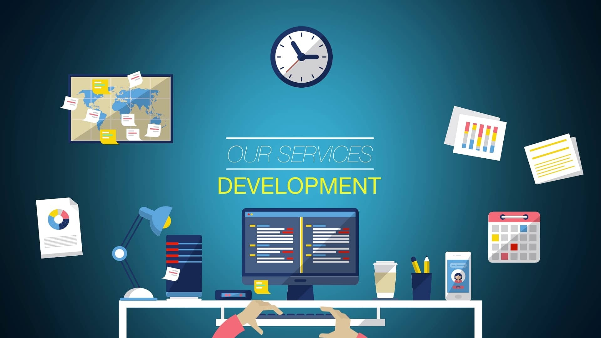

Our Networking Solutions are designed to keep your business connected and secure. From LAN and WAN setup to router and switch configuration, we ensure your network infrastructure is robust, reliable, and scalable. We also provide ongoing monitoring and troubleshooting to guarantee uninterrupted communication.

Our IT Support & Maintenance services cover everything from hardware diagnostics to software installation and updates. With both onsite and remote support options, we respond quickly to technical issues, minimizing downtime and keeping your systems running efficiently.
We also specialize in Cloud & Security Services, helping organizations migrate to the cloud, protect sensitive data, and recover from unexpected disruptions. Our cybersecurity audits and disaster recovery solutions safeguard your operations while enabling flexibility and growth. Explore our service packages today to find the right fit for your organization.

Each service description will be supported by case examples and client benefits, making the page more persuasive. This approach will help potential clients visualize how Snytech Solutions can solve their specific challenges, increasing the likelihood of engagement.
At Snytech Solutions, our services are built on reliable and modern technology to ensure clients receive secure, efficient, and scalable solutions. We provide networking services that require professional hardware such as routers, switches, and servers, supported by desktop and laptop systems with sufficient memory and processing power. Our IT support services are delivered using industry‑standard tools including Visual Studio Code.